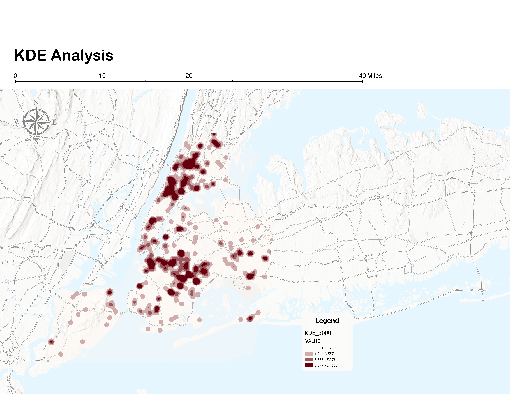
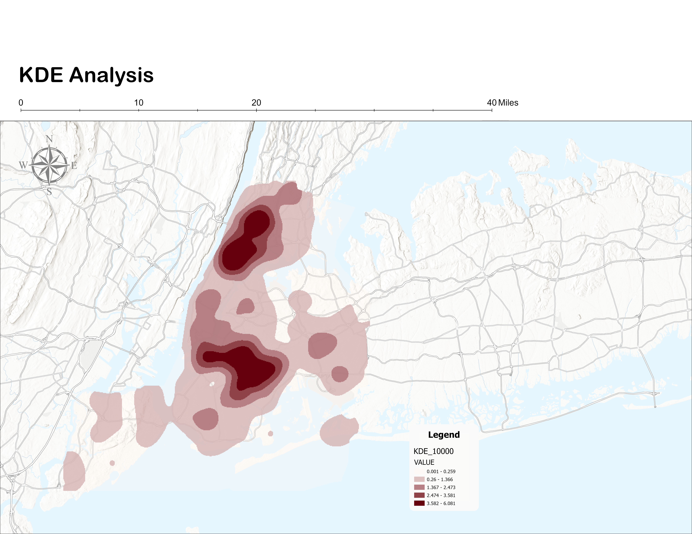
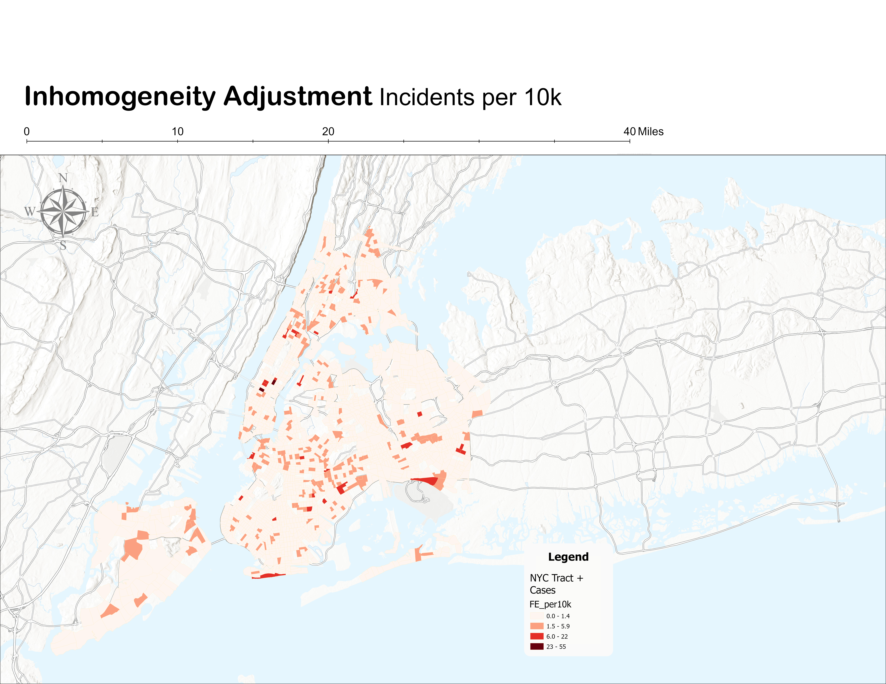
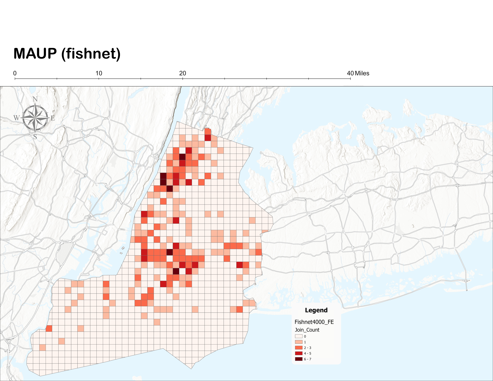
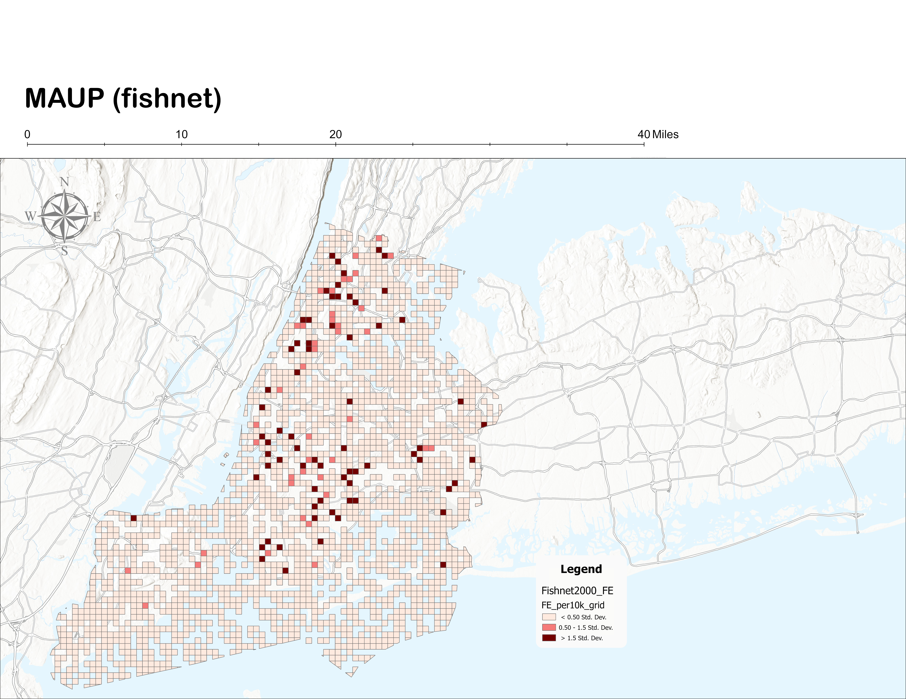

Overview
This project analyzes the spatial pattern of fatal police encounters in New York City using point pattern methodologies, producing a counter-map that reframes risk in urban space. Rather than mapping crime risk, the project visualizes and evaluates the spatial concentration of fatal police violence using the Fatal Encounters dataset — determining whether incidents are randomly distributed or statistically clustered across NYC's five boroughs.
Three major analytical components structure the study: (1) first-order intensity analysis using Kernel Density Estimation at multiple bandwidths, (2) second-order spatial dependence testing using Ripley's K function applied globally and by borough grouping, and (3) inhomogeneity adjustment to separate population concentration from true spatial clustering of incidents. A MAUP sensitivity test using a regular fishnet grid validates the robustness of findings across alternative spatial aggregation schemes.
Study Area & Population Context
The study area encompasses all five NYC boroughs — Manhattan, Bronx, Brooklyn, Queens, and Staten Island. All layers were projected into NAD 1983 (2011) State Plane New York Long Island (US Feet) to minimize distortion in distance-based analyses. A population choropleth using 2020 census tracts reveals strong spatial inhomogeneity: Manhattan and portions of Brooklyn and Queens show particularly high population density, making raw incident counts a misleading measure of risk without population normalization.

Study area — NYC five borough boundary. Analytical extent for all point pattern methods. Projection: NAD 1983 (2011) State Plane NY Long Island.

NYC population — 2020 census tracts choropleth. Strong spatial inhomogeneity is evident, particularly in Manhattan. Source: NYC Open Data.
Data Sources
| Dataset | Description | Format | Source |
|---|---|---|---|
| FatalEncounters_NYC | Fatal police encounters from 2000–present, clipped to NYC boundary | Vector point | Fatal Encounters (Finch et al., 2019) |
| NYC_Borough_Boundaries | Borough-level administrative polygons | Vector polygon | NYC Open Data |
| NYC_Boundary | Dissolved NYC boundary polygon | Vector polygon | Derived from boroughs |
| NYC_Census_Tracts_2020 | Census tracts with 2020 population counts | Vector polygon | NYC Open Data |
Methods — Four-Component Analytical Framework
Data preparation began with duplicate point removal using the Near tool to ensure a 1:1 relationship between location and event — a prerequisite for Ripley's K, which assumes independent events at distinct coordinates. The dissolved NYC boundary was used as the study area extent, with analyses run globally and by contiguous borough groupings to assess water barrier effects.
-
01
Kernel Density Estimation — First-Order Intensity
KDE visualizes the continuous spatial intensity of fatal encounters. Three bandwidths — 3,000 ft, 6,000 ft, and 10,000 ft — were tested. The 6,000 ft surface was selected as the final visualization: it balanced local cluster detail with regional interpretability, avoiding fragmentation at 3,000 ft and over-smoothing at 10,000 ft.
-
02
Ripley's K Function — Second-Order Spatial Dependence
Multi-Distance Spatial Cluster Analysis tested whether clustering exceeded complete spatial randomness across 12 distance bands spanning neighborhood to borough scales. Edge correction (simulate outer boundary values) was applied. Analysis was run globally for NYC and separately for three contiguous borough groupings: Manhattan & Bronx, Brooklyn & Queens, and Staten Island.
-
03
Inhomogeneity Adjustment — Population-Normalized Rates
Incident counts were spatially joined to census tracts and normalized to FE_per10k (incidents per 10,000 residents). An expected value per tract was calculated proportional to population share, and an excess measure derived (Excess_FE = Observed − Expected) to identify tracts with disproportionately high incident counts beyond demographic expectation.
-
04
MAUP Sensitivity Test — Fishnet Grid
A uniform fishnet grid at 2,000 ft and 4,000 ft cell sizes was generated and clipped to the NYC boundary. Encounter points were spatially joined per cell; population was area-weighted from census tract intersections. Incident rates per 10,000 residents were computed per cell and compared against the tract-based inhomogeneity results to test boundary dependency.
Kernel Density Estimation — Bandwidth Comparison
All three bandwidth surfaces consistently identify Upper Manhattan, the Bronx, and central Brooklyn as primary hotspot zones. Bandwidth choice controls the trade-off between local precision and regional legibility.
| Bandwidth | 3,000 ft | 6,000 ft | 10,000 ft |
|---|---|---|---|
| Result | Fragmented local clusters — fine-grained but hard to interpret regionally | Coherent regional clusters — balances detail and readability ✓ Selected | Over-smoothed — merges distinct clusters into broad, undifferentiated zones |

KDE — 3,000 ft bandwidth. Localized clusters visible but fragmented. Reveals micro-hotspots at the cost of regional coherence.
KDE — 6,000 ft bandwidth (selected). Coherent regional clusters in Upper Manhattan, South Bronx, and central Brooklyn. Best balance of local and regional interpretability.

KDE — 10,000 ft bandwidth. Over-smoothed — merges distinct clusters into undifferentiated mass. Water barriers become a significant artifact at this scale.
The stability of primary hotspot locations across all three bandwidths — particularly Upper Manhattan, the South Bronx, and central Brooklyn — indicates that the spatial intensity pattern is not an artifact of any single smoothing parameter choice.
Ripley's K Function — Clustering Results
The global K function shows the observed K curve consistently above the expected K and above the upper confidence envelope across nearly all distance bands — indicating statistically significant clustering citywide. Borough grouping analyses reveal that this clustering is not uniform: it varies in magnitude by geographic context, partly shaped by water separation between boroughs.
Inhomogeneity Adjustment — Population-Normalized Risk
Standard point pattern analysis assumes spatial homogeneity — that the underlying population at risk is evenly distributed. In NYC, this assumption is clearly unrealistic. Population density varies dramatically across census tracts, meaning raw incident counts mechanically reflect where people live, not necessarily where risk is elevated. The inhomogeneity adjustment separates population concentration from true spatial concentration of police violence.

Incidents per 10,000 residents — population-normalized rate map. High-rate tracts span Manhattan, the Bronx, and parts of Brooklyn and Staten Island, including areas outside the densest population cores. Source: Author's analysis.

Expected incidents — where fatal encounters would occur if distributed strictly proportional to population share. High expected values concentrate in densely populated Manhattan and portions of Brooklyn and Queens. This map primarily reflects demographic structure.

Excess incidents — observed minus expected. Red tracts exceed their population-proportional baseline. Persistent excess concentrations appear in Upper Manhattan, segments of the Bronx, central Brooklyn, and parts of Staten Island — clustering not explained by population density alone.
The excess map provides the clearest evidence of spatial disproportionality. Clustering observed in the Ripley's K analysis is not solely a reflection of population density — it persists after controlling for demographic concentration in specific neighborhoods across the Bronx, Upper Manhattan, and central Brooklyn.
MAUP Sensitivity Analysis — Fishnet Grid
Because census tracts vary substantially in size and shape across NYC, patterns in tract-level rates may partly reflect administrative boundaries rather than underlying spatial processes. A sensitivity test using a regular fishnet grid at two resolutions evaluates whether the identified hotspots are boundary-dependent artifacts or robust spatial signals.

Fishnet 4,000 ft — encounter count per grid cell. Pattern is smoother and more generalized than the 2,000 ft grid, but primary high-rate areas persist in Upper Manhattan, South Bronx, and central Brooklyn. Source: Author's analysis.

Fishnet 2,000 ft — encounters per 10,000 residents (area-weighted population allocation). Localized high-rate clusters visible in Upper Manhattan, South Bronx, central Brooklyn, and parts of Staten Island. Source: Author's analysis.
Core hotspot regions persist across both fishnet resolutions and align with the tract-based inhomogeneity results — confirming that the identified concentration patterns are not artifacts of census tract boundary configuration. Results are interpreted as robust at the neighborhood-to-community scale.
Discussion
All four analytical components converge: fatal police encounters in NYC are not randomly distributed. The global Ripley's K function confirms statistically significant clustering across both neighborhood and citywide distance scales. Borough subgroup analyses show that this clustering is not driven by a single borough — it is distributed unevenly, with Manhattan and the Bronx showing the strongest concentration and Brooklyn and Queens showing moderate but significant patterns.
The inhomogeneity adjustment is critical in this context. Without population normalization, high incident counts in dense Manhattan tracts would mechanically reflect exposure rather than elevated risk. The excess analysis demonstrates that clustering persists after controlling for demographic structure — certain areas exhibit disproportionately high encounter counts even relative to their population share. This strengthens the inference that spatial concentration cannot be attributed solely to background population density.
Policy implications should be approached cautiously. Spatial concentration does not imply causal explanation. However, identifying statistically significant concentration areas may support targeted inquiry into structural conditions, policing practices, and community-level characteristics. Spatial evidence functions as a diagnostic tool rather than a definitive explanatory model — the 2SFCA produces a measure of potential spatial concentration, not a complete account of the social processes producing it.
Limitations
- Crowd-sourced data quality. The Fatal Encounters dataset may contain underreporting, geocoding inaccuracies, or classification inconsistencies. As a crowd-sourced compilation, it represents the most robust publicly available dataset for this topic — but is not officially comprehensive.
- Euclidean distance in Ripley's K. The K function relies on Euclidean distance, which does not account for physical barriers such as waterways. NYC's inter-borough water separation influences clustering results for borough groupings — particularly for Staten Island, which is isolated by the Upper Bay.
- Population as the only exposure variable. Census population is used as the proxy for the at-risk population but does not incorporate policing intensity, patrol patterns, socioeconomic disadvantage, or built environment variables that may influence spatial concentration.
- KDE water barrier artifact. Kernel Density Estimation spreads intensity continuously across space regardless of physical barriers. Waterways between boroughs are not respected by the smoothing kernel, which may slightly inflate density estimates near coastlines.
- Standard 2SFCA binary threshold. The standard Ripley's K framework assumes homogeneity under CSR. The inhomogeneous K function (Baddeley et al., 2000) would provide a more formally correct second-order test in the presence of spatial heterogeneity — a recommended extension for future analysis.